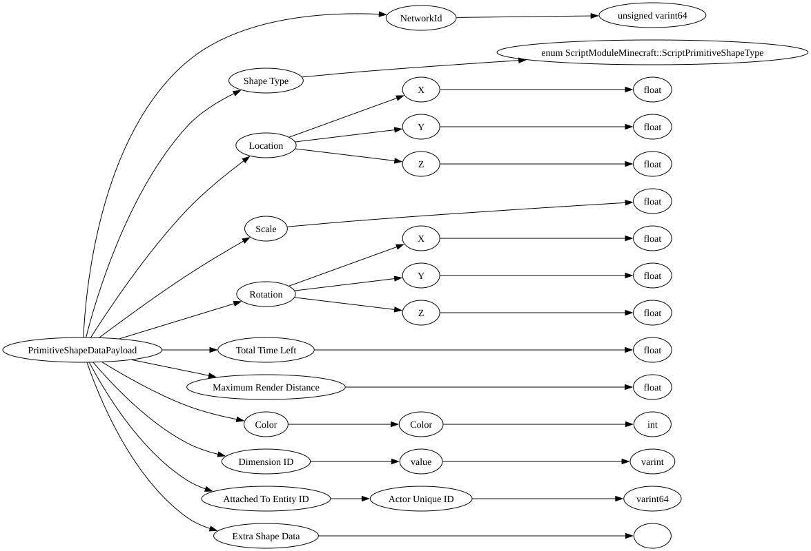

| Field Name | Field Type | Field Constraints | Field Notes |
|---|---|---|---|
| NetworkId | unsigned varint64 | <div style="padding-left: 0px;">Minimum = 0</div> | uint64 network id used to identify the matching shape on the client as the server |
| Shape Type | enum ScriptModuleMinecraft::ScriptPrimitiveShapeType | Byte representing the type of debug shape (Line, Box, Sphere, Circle, Text). | |
| Location | Vec3 | Vec3 location of the debug shape in the world. | |
| Scale | float | Float scale of the debug shape in the world. | |
| Rotation | Vec3 | Vec3 (Euler angles in radians, PYR) rotation of the debug shape in the world. | |
| Total Time Left | float | The total time left in seconds until this debug shape will be removed (0 meaning never). | |
| Maximum Render Distance | float | The maximum distacne away that this shape will render for each client. | |
| Color | Color | Color (ARGB Hex string) of the debug shape. | |
| Dimension ID | DimensionType | Currently supported: (0 -> Overworld, 1 -> Nether, 2 -> The End, 3 -> Undefined) | |
| Attached To Entity ID | ActorUniqueID | Runtime ID of the entity this shape is attached to. | |
| Extra Shape Data | Extra payload (variant) holding data specific to the type of shape (such as text string for the text shape). |